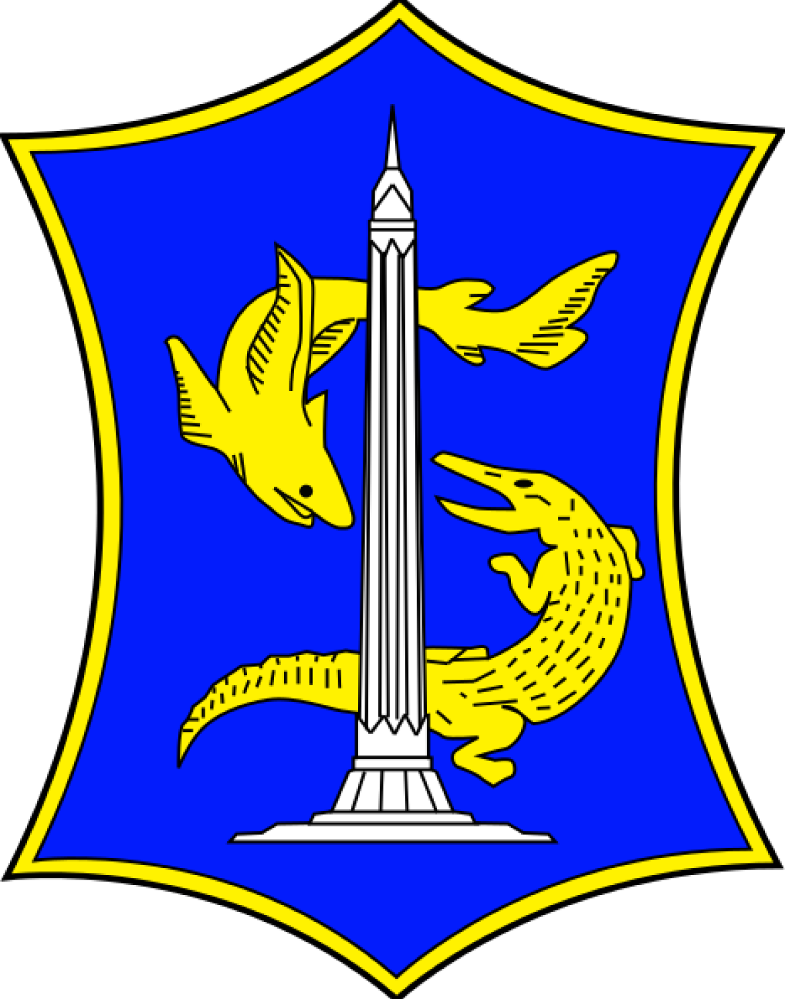

PENDAFTARAN PASIEN ONLINE PEMERINTAH KOTA SURABAYAPuskesmas Dupak
Jl. Dupak Bangunrejo Gg. Poliklinik No. 6
Telp: 031-3531009
POLI PSIKOLOGI
1
56AED
35746969696969
RIZAL AHMAD DONI
Hadir Pada :
29 Oct 2024 Jam: 07:00:00 - 07:15:00
Kode Pasien: 010674
Penjamin : Umum/Asuransi Lain


** Untuk pasien baru silakan melakukan registrasi di loket informasi/casemix center.
** Pastikan jenis penjaminan anda, perubahan jenis penjaminan no antrean tidak berlaku
** Konfirmasi Layanan Vaksin RS BDH Melalui WA Customer Service 0821-4318-4850